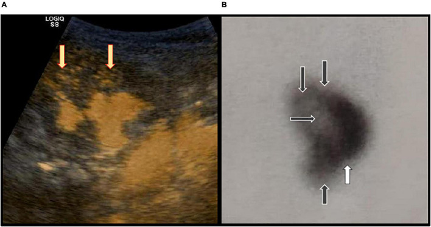
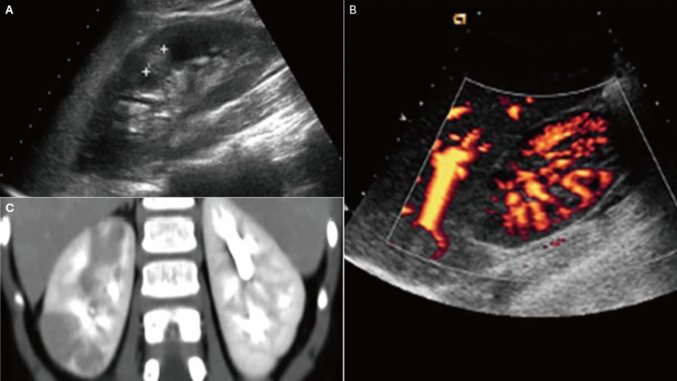
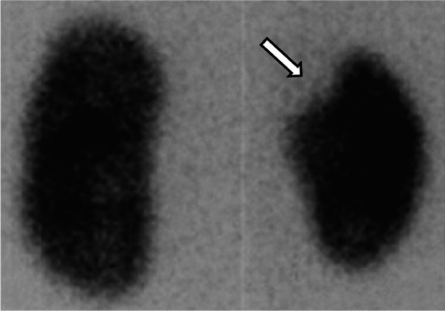
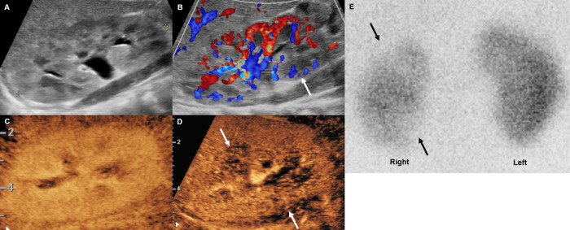

671 — Nhiễm trùng tiểu & viêm thận–bể thận ở trẻ có bàng quang thần kinh / UTI & pyelonephritis in pediatric neurogenic bladder
Tags: pattern:viem-nhiem vung:tiet-nieu protocol:US-than-tiet-nieu score:VUR anatomy:bang-quang-than-kinh
Mức chắc chắn (certainty): tổng hợp y văn (literature synthesis) — cohort + ca minh họa có ảnh CC BY, ghi PMCID từng ảnh.
1. Tổng quan bệnh học – cơ chế hình ảnh
- Bàng quang thần kinh (neurogenic bladder — NB) là rối loạn chức năng chứa–tống nước tiểu do tổn thương thần kinh: spina bifida/myelomeningocele, chấn thương tủy, sacral agenesis, tethered cord, bại não. Hai kiểu sinh lý bệnh thường gặp: bàng quang co bóp quá mức/kém giãn (compliance thấp, áp lực cao) và bàng quang không co bóp/tồn lưu; nhiều trẻ có cả hai.
- Vì sao dễ nhiễm trùng: tồn lưu nước tiểu + áp lực bàng quang cao + trào ngược bàng quang–niệu quản (VUR) + sỏi + đặt catheter định kỳ (CIC) → vi khuẩn bám niêm mạc, tạo biofilm và cư trú mạn. Đây là lý do khuẩn trú (colonization) rất hay gặp và không đồng nghĩa với nhiễm trùng.
- Vì sao thận bị tổn thương: áp lực cao + VUR đưa vi khuẩn lên thận → viêm thận–bể thận cấp (acute pyelonephritis — APN) → co kéo, xơ hóa, sẹo thận (renal scar) → tăng huyết áp, giảm chức năng thận. Trong một cohort 176 trẻ spina bifida, 14,5% mẫu cấy dương tính đơn loại, 54,3% là E. coli (Zegers 2017, PMC5228098).
- TẠI SAO hình ảnh thay đổi:
- Viêm thận–bể thận cấp gây phù mô kẽ + giảm tưới máu cục bộ: trên siêu âm là vùng giảm âm/không đồng nhất, mất phân biệt vỏ–tủy; trên CEUS/power Doppler là vùng giảm tưới máu; trên CT là vùng hình nêm giảm ngấm thuốc (“striated nephrogram”).
- Áp-xe thận là ổ dịch hóa có viền ngấm thuốc, trung tâm không ngấm; ứ mủ thận (pyonephrosis) là hệ đài–bể thận giãn chứa dịch đục/mảnh vụn, cần dẫn lưu cấp.
- Sẹo thận là vùng mất vỏ thận khu trú, co kéo đài; trên DMSA là vùng giảm/không bắt xạ — chỉ đánh giá ổn định sau 4–6 tháng vì tổn thương cấp có thể hồi phục.
- Ngưỡng định lượng cần nhớ:
- Pyuria: ≥ 10 bạch cầu/mm³ nước tiểu không ly tâm hoặc ≥ 5 bạch cầu/HPF; dipstick leukocyte esterase/nitrite chỉ là sàng lọc.
- Cấy: AAP 2011 dùng ngưỡng ≥ 50.000 CFU/mL một loại uropathogen từ mẫu catheter/suprapubic/clean-catch (một số lab dùng 100.000 CFU/mL cho clean-catch). Ở trẻ CIC, không điều trị chỉ vì cấy dương tính.
- Yếu tố nguy cơ tổn thương đường tiết niệu trên (UUTD) ở trẻ NB (nomogram 267 trẻ): DLPP ≥ 40 cmH₂O (OR 3,588), compliance < 20 mL/cmH₂O (OR 2,444), UTI tái phát (OR 2,278), bàng quang co bóp quá mức (OR 2,848); CIC là yếu tố bảo vệ (OR 0,374) (Li 2023, PMC9768210).
- Dịch tễ: trong 1.065 trẻ NB ≤ 17 tuổi, 18,1% có nhiễm trùng tiểu dưới; ở nhóm spina bifida mở lên tới 54,1% (Kitta 2023, PMC10179246).
2. Mẫu hình + chẩn đoán phân biệt theo vị trí (gamut)
- Mẫu hình lâm sàng: trẻ NB có sốt + đau hông lưng/thắt lưng + nôn → nghĩ APN; tiểu buốt, tiểu gấp, đau bụng dưới, không sốt → nghĩ viêm bàng quang; sốt + bàng quang căng, không tiểu được → nghĩ ứ mủ/tắc nghẽn; không triệu chứng + cấy dương tính → nghĩ khuẩn trú.
- Gamut theo vị trí:
- Bàng quang: viêm bàng quang cấp, viêm bàng quang xuất huyết, sỏi bàng quang, túi thừa, lộ/xói mòn catheter.
- Niệu quản–bể thận: VUR (I–V), ứ nước do hẹp khúc nối, sỏi, ứ mủ thận.
- Nhu mô thận: APN khu trú/ổ, áp-xe thận, viêm đài–bể thận, sẹo thận cũ.
- Ngoài đường tiểu: viêm mào tinh–tinh hoàn, áp-xe cơ thắt lưng–chậu, viêm phúc mạc, táo bón (rất hay gặp ở spina bifida), rối loạn tự chủ (autonomic dysreflexia).
- Bẫy lâm sàng: trẻ NB có thể không cảm nhận đau hông lưng hoặc biểu hiện bằng tăng huyết áp, vã mồ hôi, co cứng, khó chịu do rối loạn tự chủ — không được quy mọi triệu chứng cho UTI.

(A) ceVUS: trào ngược trong thận ở cực trên/giữa (mũi tên vàng). (B) DMSA: khuyết xạ nhiều vùng và sẹo cực dưới (mũi tên). Nguồn: Simičić Majce A et al., Front Pediatr 2022 (PMC9309385), Fig. 1, CC BY 4.0.3. Bảng so sánh phân biệt (ma trận đối chiếu)
| Thực thể (entity) | Hình ảnh/lâm sàng điển hình | Chốt vào (rule-in) | Chốt loại (rule-out) | Gợi ý xác nhận |
|---|---|---|---|---|
| Khuẩn trú (asymptomatic bacteriuria) | Cấy dương tính nhưng không triệu chứng, có thể có pyuria nhẹ; bàng quang thần kinh/CIC | Cấy dương tính + không sốt/đau + không thay đổi lâm sàng | Sốt, đau hông lưng, nôn, thay đổi hành vi → không còn là khuẩn trú | Không điều trị; theo dõi lâm sàng, không cấy định kỳ |
| Viêm bàng quang cấp | Tiểu buốt/gấp, đau bụng dưới, nước tiểu đục; không sốt; US bàng quang dày thành | Triệu chứng đường tiểu dưới + pyuria + cấy ≥ 50.000 CFU/mL | Sốt/đau hông lưng → nghĩ APN, không chỉ cystitis | Cấy trước kháng sinh; US nếu tái phát |
| Viêm thận–bể thận cấp (APN) | Sốt, đau hông lưng, nôn; US: vùng giảm âm/mất phân biệt vỏ–tủy; CEUS: giảm tưới máu; CT: vùng hình nêm giảm ngấm | Sốt + pyuria + cấy dương tính + ổ giảm tưới máu/giảm ngấm | US bình thường KHÔNG loại trừ APN; phải CEUS/CT/DMSA nếu nghi cao | CEUS hoặc CT có cản quang; DMSA sau 4–6 tháng |
| Áp-xe thận | Ổ dịch viền ngấm thuốc, trung tâm không ngấm; sốt dai dẳng, đau nhiều | Ổ dịch hóa có viền + sốt không giảm sau 48–72 giờ kháng sinh | Chỉ APN lan tỏa, không ổ dịch → không cần dẫn lưu | CT/MRI; dẫn lưu nếu > 3–5 cm hoặc không đáp ứng |
| Ứ mủ thận (pyonephrosis) | Đài–bể thận giãn, dịch đục/mảnh vụn, thành dày; nhiễm trùng nặng | Giãn hệ đài–bể + sốt/nhiễm trùng + dịch đục | Giãn đơn thuần không sốt → ứ nước, chưa ứ mủ | US/CT; dẫn lưu niệu quản hoặc chọc thận cấp |
| Sỏi/ứ nước do tắc | Đau quặn, US giãn đài–bể; CT thấy sỏi cản quang | Sỏi + giãn hệ đài–bể + đau | Giãn nhẹ không sỏi, không đau → theo dõi | CT không cản quang/CTA; siêu âm Doppler |
| Rối loạn tự chủ (autonomic dysreflexia) | Tăng huyết áp + nhịp chậm + vã mồ hôi + đau đầu, không sốt; thường do bàng quang căng/sỏi | HA tăng đột ngột + kích thích bàng quang/trực tràng | Sốt + pyuria + cấy dương → nhiễm trùng là nguyên nhân/thúc đẩy | Đo HA, làm rỗng bàng quang, tìm ổ kích thích |
| Viêm mào tinh–tinh hoàn | Đau bìu một bên, sưng, sốt; Doppler tăng tưới máu | Đau bìu + sưng + Doppler tăng tưới máu | Xoắn tinh hoàn: đau đột ngột, Doppler giảm/không tưới máu → cấp cứu ngoại | Siêu âm Doppler; khám niệu dục |
Dấu hiệu chốt cần đọc đúng
- APN trên CEUS: vùng giảm tưới máu ở thì nhu mô sớm, có thể thấy rõ hơn power Doppler; trong nghiên cứu 21 trẻ, CEUS đồng thuận với DMSA κ = 0,80, trong khi siêu âm grayscale và color Doppler không đồng thuận có ý nghĩa (Lee 2023, PMC10075446).
- Sẹo thận trên DMSA: khuyết xạ khu trú vỏ thận, bờ rõ, thường ở cực trên/dưới; phân biệt với thùy thai (fetal lobulation) và cột Bertin phì đại — nhờ hình dạng bờ ngoài và xác nhận bằng DMSA 2 pha/SPECT khi cần.
- US bàng quang: thành dày, bè dày (trabeculation), túi thừa, sỏi, cặn; đánh giá thể tích tồn lưu sau CIC/đi tiểu. Áp lực bàng quang (DLPP/compliance) lấy từ niệu động học (urodynamics), không lấy từ hình ảnh.
4. Protocol chụp + hệ phân độ/điểm chuẩn hóa
- Lấy mẫu nước tiểu đúng: ưu tiên catheter mới (CIC) hoặc chọc hút trên xương mu ở trẻ nhỏ; không lấy từ túi dẫn lưu/ống cũ; cấy trước kháng sinh; ghi rõ phương pháp lấy mẫu.
- Siêu âm thận–bàng quang (RBUS): chỉ định khi sốt/UTI phức tạp, nghi ứ nước/áp-xe/sỏi; đánh giá kích thước thận, độ dày nhu mô, giãn đài–bể, bàng quang, tồn lưu. Ở trẻ NB, siêu âm định kỳ (thường 6–12 tháng) và khi có triệu chứng.
- CEUS: khi nghi APN mà siêu âm thường/Doppler không rõ; không dùng iod, có thể lặp lại; đánh giá tưới máu nhu mô.
- CT/MRI: khi nghi áp-xe, ứ mủ, sỏi cản quang, biến chứng hoặc không đáp ứng điều trị; MRI ưu tiên ở trẻ cần tránh bức xạ.
- VCUG/ceVUS: đánh giá VUR (độ I–V) khi có UTI tái phát, bất thường trên siêu âm, hoặc theo dõi NB có VUR đã biết; ceVUS tránh bức xạ.
- DMSA: đánh giá sẹo/giảm chức năng vỏ thận 4–6 tháng sau đợt APN, không làm quá sớm.
- Niệu động học: đo compliance, DLPP, thể tích tồn lưu, áp lực detrusor để quyết định CIC/kháng cholinergic/Botox; đây là phần “không thể thay bằng hình ảnh”.
flowchart TD
A["Trẻ bàng quang thần kinh có cấy nước tiểu dương tính"] --> B{"Có triệu chứng?"}
B -->|"Không"| C["Khuẩn trú: KHÔNG kháng sinh, theo dõi"]
B -->|"Có"| D{"Pyuria?"}
D -->|"Không"| E["Tìm nguyên nhân khác: táo bón, rối loạn tự chủ, sỏi"]
D -->|"Có"| F["UTI: cấy trước, kháng sinh theo kinh nghiệm"]
F --> G{"Sốt hoặc đau hông lưng?"}
G -->|"Có"| H["APN: siêu âm/CEUS, kháng sinh 7–10 ngày"]
G -->|"Không"| I["Viêm bàng quang: kháng sinh 3–5 ngày"]
H --> J{"Không cải thiện sau 48–72 giờ?"}
J -->|"Có"| K["CT/MRI: áp-xe hoặc ứ mủ → dẫn lưu"]
J -->|"Không"| L["Theo cấy, cân nhắc dự phòng nếu tái phát"]
- Điều trị kháng sinh: viêm bàng quang 3–5 ngày; APN 7–10 ngày (10–14 ngày nếu áp-xe/không cải thiện). Chọn theo cấy/kháng sinh đồ; nitrofurantoin không dùng cho APN (nồng độ mô thận thấp); tránh fluoroquinolone ở trẻ nếu còn lựa chọn khác.
- Dự phòng (CAP): cân nhắc khi VUR độ III–V hoặc UTI sốt tái phát; lựa chọn nitrofurantoin (tránh < 2 tháng, thiếu G6PD), TMP-SMX, cephalexin; đánh giá lại sau 6–12 tháng, không dùng vô thời hạn. Không điều trị khuẩn trú.
- Kiểm soát bàng quang: CIC đúng kỹ thuật, làm rỗng bàng quang đều, điều trị táo bón, kháng cholinergic khi bàng quang co bóp quá mức, Botox/đặt bàng quang khi compliance thấp; giảm áp lực bàng quang là cách phòng UTI–sẹo thận hiệu quả nhất.
- Kháng sinh đồ & đa kháng: trước khi dùng kháng sinh phổ rộng, cấy lại và xem yếu tố nguy cơ (nhập viện, kháng sinh gần đây, catheter lưu, CIC); xuống thang khi có kết quả. Trong cohort spina bifida, ngừng dự phòng kháng sinh gắn với giảm tỷ lệ đề kháng (Zegers 2017, PMC5228098) — nhưng quyết định phải cá thể hóa theo số đợt UTI sốt và mức VUR.
5. Biến thể bình thường và cạm bẫy
- Khuẩn trú là “bình thường” ở nhiều trẻ CIC: cấy dương tính đơn loại, không triệu chứng, không cần kháng sinh. Điều trị sẽ chọn lọc vi khuẩn đề kháng và tăng nguy cơ C. difficile.
- US bình thường không loại trừ APN: tổn thương viêm có thể khu trú và chỉ thấy trên CEUS/CT; nếu nghi cao, đừng dừng ở siêu âm grayscale.
- DMSA quá sớm: làm trong vòng vài tuần sau APN có thể thấy khuyết xạ do phù/viêm và gọi nhầm là sẹo; chờ 4–6 tháng.
- Sẹo thận vs biến thể: thùy thai, cột Bertin phì đại, lách tiếp giáp cực trên trái có thể giả sẹo trên US; DMSA/CT xác nhận.
- VUR độ thấp vẫn có thể có sẹo: trào ngược trong thận (intrarenal reflux) làm sẹo ngay cả ở VUR độ I–II; đừng chỉ dựa vào độ VUR để quyết định.
- Rối loạn tự chủ: tăng huyết áp + nhịp chậm ở trẻ chấn thương tủy/spina bifida có thể do bàng quang căng, không phải nhiễm trùng; xử trí làm rỗng bàng quang trước.
- Táo bón: rất hay gặp ở spina bifida, gây đau bụng/sốt nhẹ giả UTI; hỏi và khám trực tràng, X-quang bụng khi cần.
- Catheter lưu lâu ngày: luôn nghĩ ổ nhiễm từ biofilm, sỏi quanh catheter, áp-xe; cấy từ catheter mới, không từ túi.
6. Tự lượng giá — Blind Quiz
Ca 1 — Bé trai 3 tuổi, myelomeningocele, CIC. Sốt 39°C, đau hông lưng, nôn. Siêu âm thận và CT bụng có cản quang.

- Gợi ý lâm sàng: UTI tái phát nhiều đợt, đang dùng CIC, không có sỏi rõ.
- Câu hỏi: Mô tả 3 dấu hiệu trên 3 phương thức? Chẩn đoán và 3 phân biệt? Bước tiếp theo?
Bấm để hiện đáp án (findings + chẩn đoán)
- Findings: (A) siêu âm: vùng giảm âm/không đồng nhất ở nhu mô thận; (B) power Doppler: vùng giảm tưới máu; (C) CT: vùng hình nêm giảm ngấm thuốc ở cực trên thận phải.
- Chẩn đoán: viêm thận–bể thận cấp (APN) khu trú.
- Phân biệt: áp-xe thận (ổ dịch viền ngấm), ứ mủ thận (giãn đài–bể + dịch đục), sỏi/ứ nước (giãn + sỏi), và khuẩn trú (không sốt/đau).
- Xử trí: cấy máu/nước tiểu trước kháng sinh, kháng sinh theo kinh nghiệm phổ đường tiểu 7–10 ngày, theo dõi 48–72 giờ; nếu không cải thiện → CT/MRI tìm áp-xe, dẫn lưu; DMSA sau 4–6 tháng để đánh giá sẹo.
- Nguồn ảnh: Pietropaolo G et al., Pediatr Nephrol 2025 (PMC12187806), Fig. 3, CC BY 4.0 (hình tổng hợp từ nguồn CC BY).
Ca 2 — Bé gái 5 tuổi, spina bifida, nhiều đợt UTI sốt. DMSA 6 tháng sau đợt gần nhất.

- Gợi ý lâm sàng: đã điều trị nhiều đợt APN, hiện không sốt; siêu âm thận hơi nhỏ bên phải.
- Câu hỏi: Dấu hiệu trên DMSA? Ý nghĩa tiên lượng? Làm gì để phòng tái phát?
Bấm để hiện đáp án (findings + chẩn đoán)
- Findings: khuyết xạ khu trú cực trên thận phải (mũi tên), nhu mô còn lại bắt xạ; tương ứng sẹo thận.
- Chẩn đoán: sẹo thận sau APN tái phát; nguy cơ tăng huyết áp, giảm chức năng thận, và tái phát nếu còn VUR/áp lực bàng quang cao.
- Phòng tái phát: tối ưu CIC/làm rỗng bàng quang, điều trị táo bón, đo urodynamics (DLPP/compliance), cân nhắc dự phòng kháng sinh nếu VUR độ III–V hoặc UTI sốt tái phát, theo dõi siêu âm/creatinine/HA.
- Nguồn ảnh: Pietropaolo G et al., Pediatr Nephrol 2025 (PMC12187806), Fig. 7, CC BY 4.0.
Ca 3 — Bé trai 2 tháng tuổi, sốt, nghi UTI. Siêu âm grayscale bình thường, sau đó CEUS.

- Gợi ý lâm sàng: cấy nước tiểu E. coli; siêu âm thường và color Doppler không thấy ổ bất thường.
- Câu hỏi: CEUS thêm được gì? Vì sao không dừng ở siêu âm thường? Đối chiếu với DMSA ra sao?
Bấm để hiện đáp án (findings + chẩn đoán)
- Findings: (A) grayscale bình thường; (B) color Doppler không thấy rõ; (C,D) CEUS: vùng giảm tưới máu ở cực giữa/dưới thận; (E) DMSA tương ứng vùng giảm bắt xạ.
- Chẩn đoán: APN khu trú. CEUS phát hiện tổn thương mà siêu âm thường/Doppler bỏ sót; trong nghiên cứu 21 trẻ, CEUS đồng thuận với DMSA κ = 0,80.
- Xử trí: kháng sinh theo cấy, theo dõi; DMSA lặp sau 4–6 tháng nếu cần đánh giá sẹo; tầm soát VUR/urodynamics nếu tái phát.
- Nguồn ảnh: Lee HB et al., PLOS ONE 2023 (PMC10075446), Fig. 2, CC BY 4.0.
Bài liên quan chéo
- 600 – Tổng quan Nhi khoa
- 635 – Dị tật tiết niệu nhi: SFU, VUR, PUV
- 668 – Theo dõi sau tháo căng tủy & bàng quang thần kinh
- 642 – Biến chứng muộn sau chấn thương đường tiết niệu dưới ở trẻ
Ảnh
671_viem-than-be-than_CT_PMC12187806-F3-CCBY40.jpg— US/power Doppler/CT của APN; Pietropaolo G et al., Pediatr Nephrol 2025, CC BY 4.0.671_seo-than_DMSA_PMC12187806-F7-CCBY40.jpg— DMSA: khuyết xạ cực trên = sẹo; Pietropaolo G et al., Pediatr Nephrol 2025, CC BY 4.0.671_viem-than-be-than_CEUS_PMC10075446-F2-CCBY40.jpg— CEUS phát hiện vùng giảm tưới máu; Lee HB et al., PLOS ONE 2023, CC BY 4.0.671_trao-nguoc-trong-than_ceVUS-DMSA_PMC9309385-F1-CCBY40.jpg— ceVUS intrarenal reflux + DMSA; Simičić Majce A et al., Front Pediatr 2022, CC BY 4.0.- Nguồn + giấy phép từng ảnh:
images/CREDITS.md.
Không dùng để chẩn đoán độc lập khi chưa có người hướng dẫn.